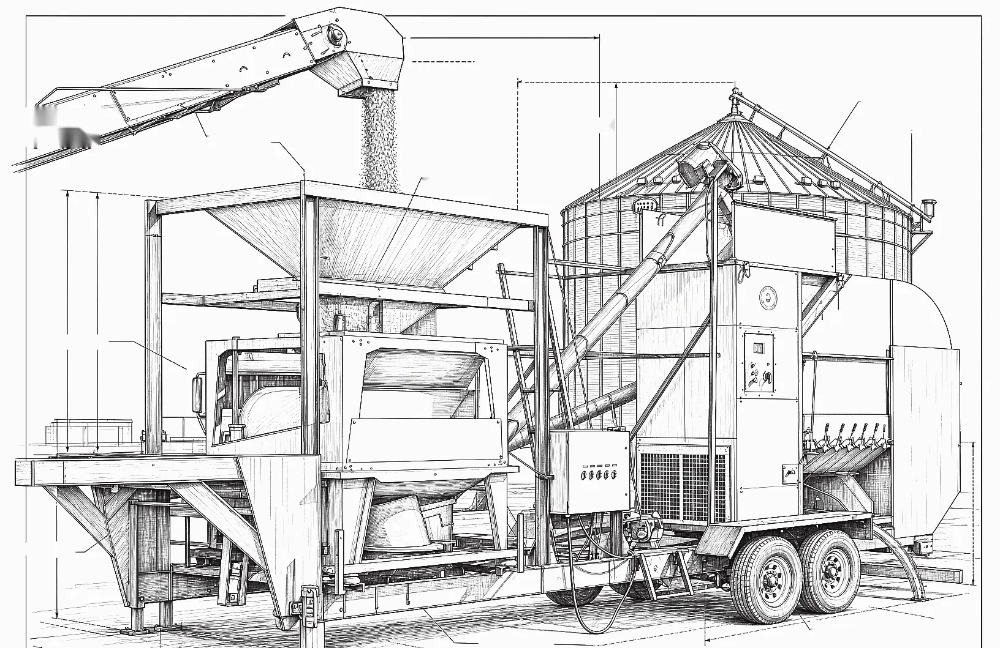
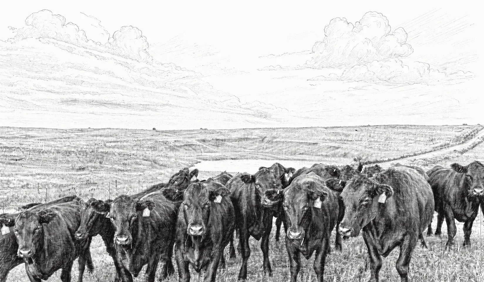
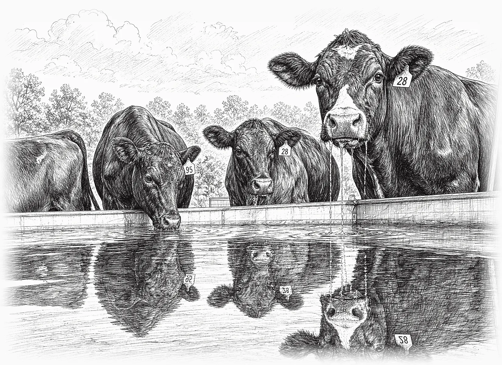
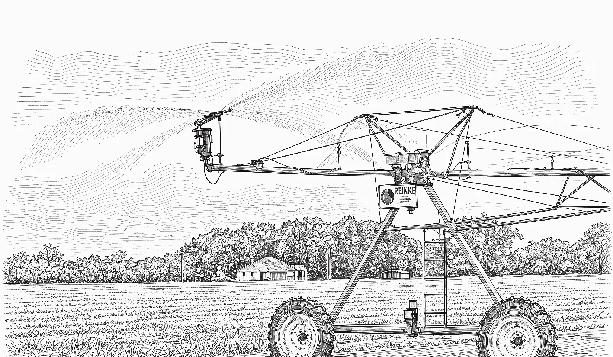
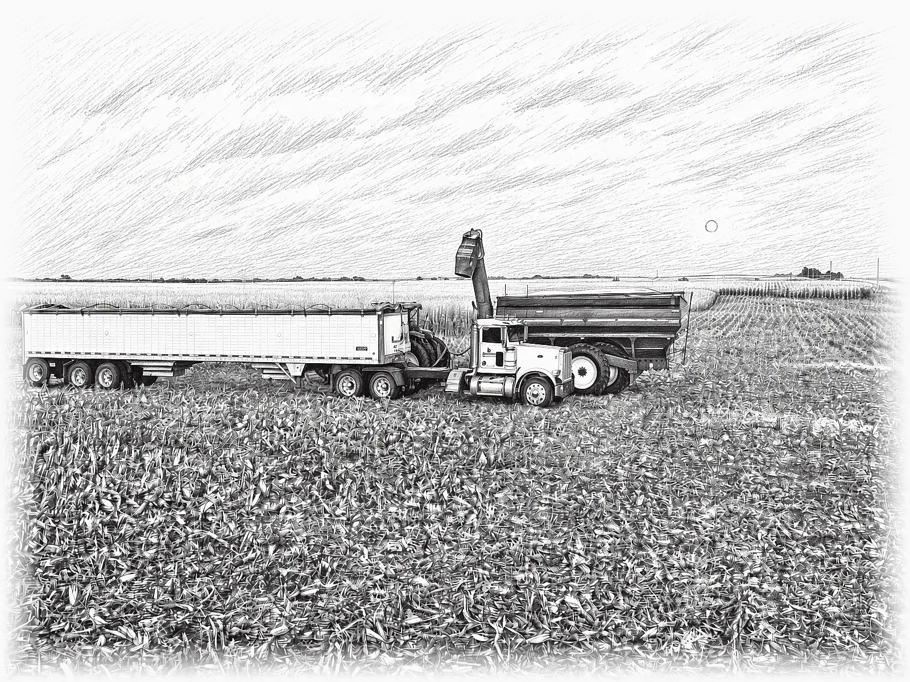
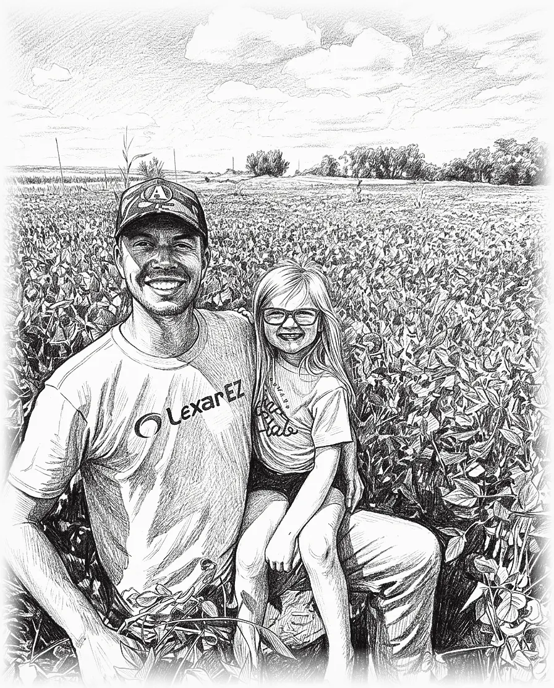

Sheet A-1 · Franklin Co., Nebraska
Cleaned rye, sold off the farm.
We're a family farm two miles north of Franklin. We grow our own rye, clean it here and sell it to folks who need it for cover crop or grazing.

cleaned on the farm grain bin rye cleaner bulk bags or tender fillRye for sale
We grow and clean our own rye. It goes out in big bulk bags, or we fill your tender right here on the farm.
Most of it goes for cover crop or grazing. Ryan can help you figure out seeding for either one.
Call or email Ryan to schedule pickup and get pricing.
Angus

We run a commercial Angus cow herd. We want cows that breed back, calve on their own and raise a good calf on grass. That's about all there is to it.
We sell bred heifers.
Give Ryan a call to see what's available.

Irrigation & crops
We grow corn and soybeans on irrigated and dryland ground around Franklin and across the line into north-central Kansas. We soil test, rotate, and try to leave the ground better than we found it.



Who we are
Ryan Bonham owns and runs Bonham Farms. He's the fifth generation on this ground. He and his wife, Jeanne, are raising the sixth: Saylor, Jace and Molley.
We live here, we farm here and we sell to people around here. If you've got a question, just call.